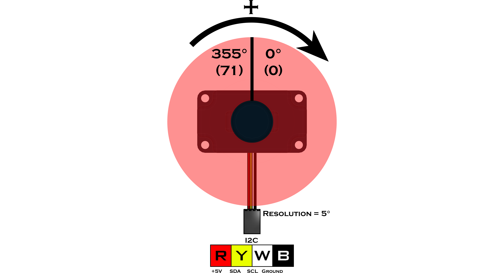

IR Locator 360° (45-2009)
The IR Locator 360° utilizes an array of 4 photodiodes to detect the direction and distance from a 1200Hz or 600Hz pulsed infrared source with a 5°resolution. Both the 600Hz and 1200Hz frequencies can be read at the same time allowing up to two directional sources to be used. This device is compatible with all legacy IR sources such as the HiTechnic IR Ball, Beacon, and Beacon V2. Overall detection range is based on the intensity of the IR source being used.
Sensor Type : Four Wire I2C
Default I2C Address : 0x1C
Sensor ID Code : 0x4C
Dimensions : 56mm x 32mm x 31mm
Mounting Holes : 48mm x 24mm
Power : 5V DC, 22mA Max
Signal Logic Levels : Logic 0 - 0V, Logic 1 - 5V
I2C Bus Speed : 100kHz max
I2C Address Change Option : Yes (Even Number 0x10 - 0xEE)
IR Locator 360° Visual Programming Blocks
List of available functions:

Fusion.locator360(driver, addr)
Definition
This class contains the necessary drivers for our IR Locator 360° and must be called at the beginning of the program before using any other class functions.
Parameters
driver : Main driver object so the class can call driver functions (f)
addr : Enter an I2C address in hexadecimal if different from defaultReturns
IR Locator 360° Object
Example
import Fusion f = Fusion.driver() loc1 = Fusion.range(f) loc2 = Fusion.range(f, 0x40)
getHeading(frequency)
Definition
The heading value is returned in degrees and ranges from 0 to 71 at a resolution of 5°. If an object were to circle the sensor in a clockwise direction, the value of degrees will increase from 0. If the object were to circle in a counter-clockwise direction, the value of the heading will decrease from 71. Frequencies of 600Hz and 1200Hz can be read from this sensor.
Parameters
frequency : 600Hz or 1200Hz
Returns
Heading : int (0 - 71)
Example
import Fusion f = Fusion.driver() loc = Fusion.locator360(f) print loc.getHeading(1200) print (loc.getHeading(1200) * 5)
getIntensity(frequency)
Definition
The intensity value represents the distance of the infrared source. When no infrared source is detected the value of the intensity level approaches 0. As an infrared source get closer to the sensor the value of the intensity increases.
Parameters
frequency : 600Hz or 1200Hz
Returns
Intensity : int (0 - 255)
Example
import Fusion f = Fusion.driver() loc = Fusion.locator360(f) print loc.getIntensity(600)
Questions?
Contact Boxlight Robotics at support@BoxlightRobotics.com with a detailed description of the steps you have taken and observations you have made.
Email Subject: Fusion Python IR Locator 360